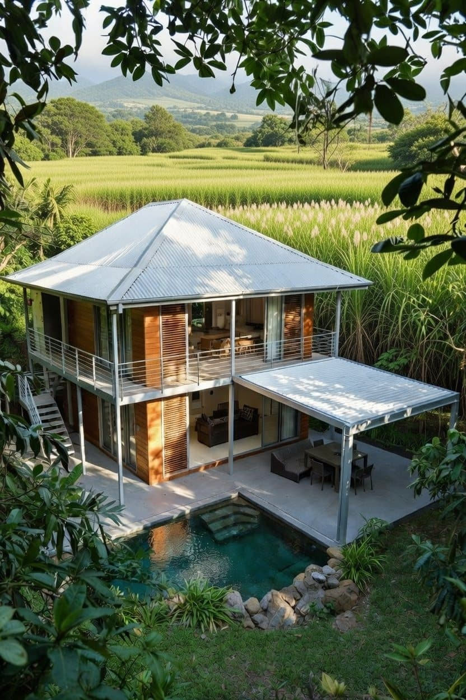
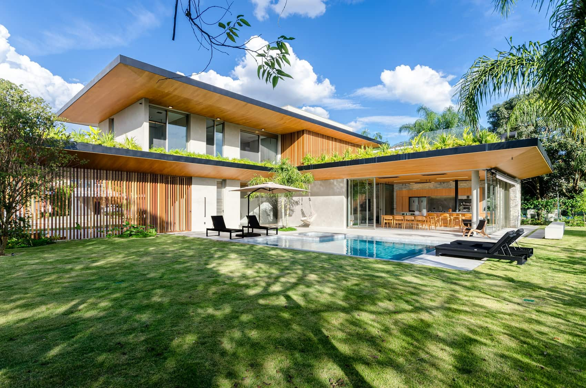
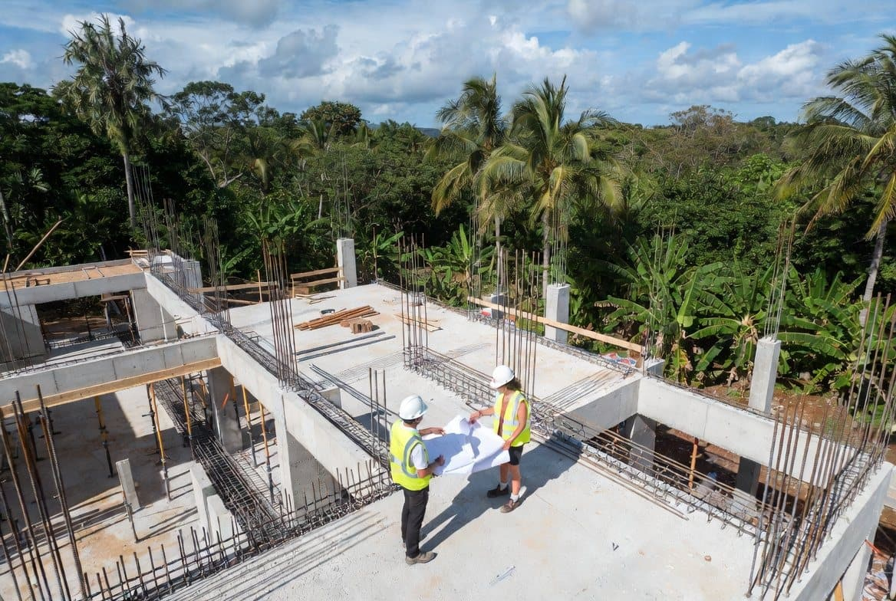
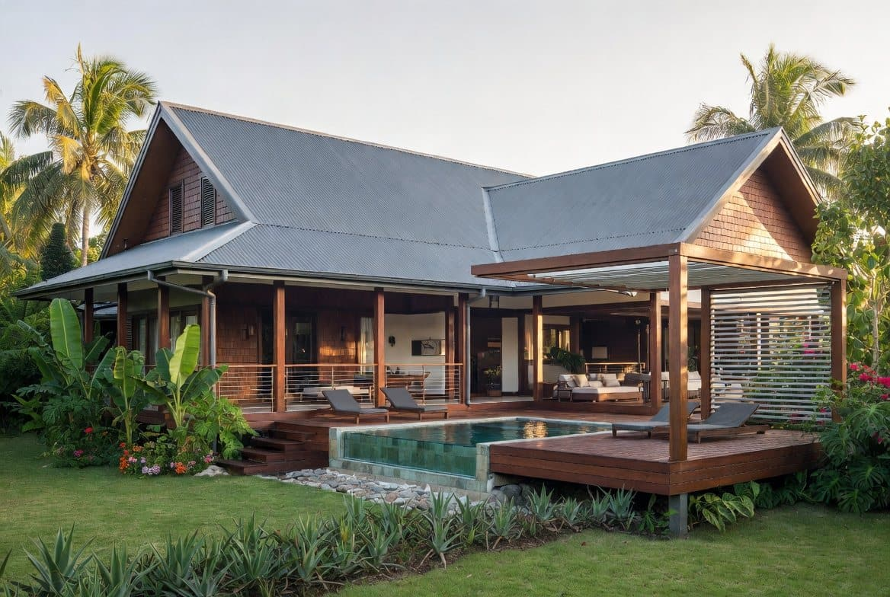

Conseils et informations sur la construction et la maîtrise d'œuvre à La Réunion
Maître d'ouvrage, maître d'œuvre, architecte, géomètre, bureaux d'études, contrôleur technique, CSPS, entreprises : le rôle de chacun et ceux qui sont vraiment obligatoires.

Certificat d'urbanisme, PLU, PPR, bornage, réseaux, assainissement, étude de sol : les points à contrôler avant de signer la promesse de vente.
Quels projets sont taxés (pas seulement le neuf), valeur 2026 à 892 €/m², taux réels des communes du Sud, abattement, exonérations, paiement. Avec un exemple chiffré.
Terrain, notaire, études, honoraires, assurances, taxes, raccordements, imprévus : la liste complète des postes de budget d'une construction à La Réunion.
Pourquoi elle est obligatoire, ce qu'elle couvre, combien elle coûte, quand la souscrire. Plus : parfait achèvement, biennale, décennale et réception.

Fosse, filtre à sable ou micro-station : comment valider l'assainissement de votre terrain, étape par étape, du contrôle de conception aux contrôles périodiques.

Déclaration d'ouverture, panneau, suivi, réception, DAACT, Consuel, déclaration aux impôts : toutes les démarches du début à la fin du chantier.

Ventilation, porosité, protection solaire, eau chaude solaire, acoustique et déphasage thermique — le guide complet de la réglementation tropicale applicable au 974.

Découvrez les étapes clés, les documents nécessaires et les démarches à suivre pour obtenir votre permis de construire à La Réunion (974).